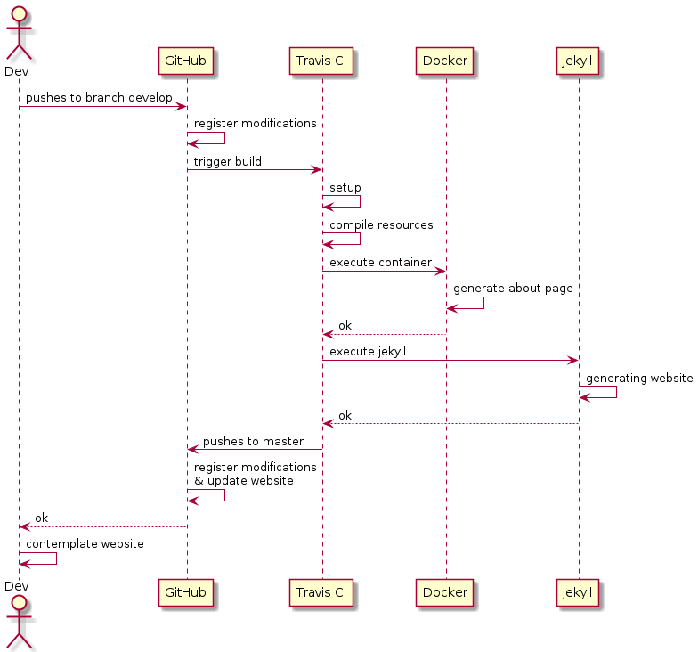
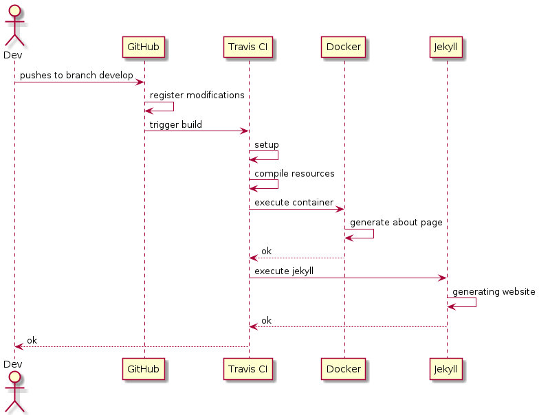
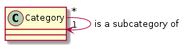

leonardsa.github.io
Link to repository | Travis CI’s build status
I first built this website during the summer of 2019. I was looking for projects to work on and stumbled upon Github Pages. Any good computer scientist has his own website but web development is not my cup of tea. Jekyll automated it enough to suit my needs and I created the website. However, I forgot about it all once it was built and had set up with Travis CI for deployment (which was the fun part). Two years later, I decided to give it another go. It was not easy as after not having been maintained for so long some dependency issues had arisen. To deal with those I got to learn new tools like Docker. It made the project more interesting. This article is more or less documentation on how this website is set up.
PS: This is the first article that this website has ever hosted (apart from test ones)!
TL;DR: Jekyll-based website hosted by GitHub and used in conjonction with Travis CI to test, build, generate content and deploy website.
Table of contents
- Table of contents
- Summary
- Use Cases
- Tools
- GitHub
-
Jekyll
- 6.1. Generalities
- 6.2. Specificities: categories
- 6.3. Dependabot
- Travis CI
- Scripts
Summary
Use cases:
- uc1: push to develop
- uc2: push to feature branch
- uc3: security bot auto-resolves opened merge requests
Tools:
- Jekyll
- Travis CI
- GitHub
- Docker
- Dependabot
Note to self: the
GITHUB_TOKENenvironment variable is a token that need to be created in GitHub and set in Travis CI. It is for allowing Travis CI to push to master.
Use Cases
The following sequence diagrams illustrate the desired workflow for maintaining this website.
This first use case is the most important of our DevOps setup:
uc1:push to develop. I wanted to have control over the deployment flow to be
able to use scripts to generate content. Plus, I wanted the master
branch to remain “clean”, only the website’s compiled content should be commited
as it would be modified every push.
UC1: Push to develop
--------------------
1. The developer pushes to the branch develop on GitHub.
2. Modifications are versioned.
3. Modifications are tested.
4. Modifications are deployed if tests have passed.

The second use case is very similar to the first one: uc2: push to feature branch.
When we push to any other branch than develop or master, we should build the website
in order to ensure we have not broken anything, but we mustn’t deploy the website.
UC2: Push to feature branch
---------------------------
1. The developer pushes to a feature branch on GitHub:
- feature branch is NOT master
- feature branch is NOT develop
2. Modifications are versioned.
3. Modifications are tested.

Still have to figure out uc3:dependabot auto-resolves opened merge requests.


UC3: Security bot auto-resolves opened merge requests
-------------------------------------
1. Figure it out.
Tools
As you can have seen from the use cases, this website makes use of a multitude of tools:
-
Jekyllfor generating the website -
Travis CIfor testing the modifications and deploying the website -
GitHubfor hosting the website (and versioning obviously) -
Dockerfor running a simple python script to generate the About page (which you should check out by the way) -
Dependabotfor dealing with security issues
These tools and how they were used, will be shortly explained in the following sections. Note that the section on Dependabot is not ready yet. It makes a pull requests on master, however we want it to make a pull request and merge on develop for Travis CI to build it. This is something that I need figure out how to configure.
GitHub
The only thing to point out is that two branches are essential:
- master: it contains the website’s generated code ; pushes should only come from Travis CI
- develop: it contains the ingredients required to generate the website ; we push there in order to apply changes to the website
I wanted a clean structure for the repository and did not like the lack of control I had over the branch gh-pages.
Jekyll
Generalities
I got started with Jekyll watching Bill Raymond’s video guide. It is quite informative and espacially on the basics.
Jekyll generates our website. Here is a set of the commands we actually use:
-
bundle exec jekyll build: builds the website -
bundle install: install missing gems -
bundle update: update gems -
bundle exec jekyll serve --livereload: build site and service at localhost port 4000
Jekyll’s website structure also plays a significant role enough that we have to adress it:
- index.md: the index page of the website
- assets: css-related items such as typefonts
- _config.yml: configuration file for Jekyll
- _pages: directory containing all pages to be build for the website
- _sass: scss for the website
- _layouts: HTML layouts for the different types of pages e.g home, page, post
- _includes: HTML to-be included code e.g header, footer
- _site: directory containing the generated website
Specificities: categories
Jekyll has been customed to order the different posts using the tags category and subcategory. This allows us to filter the articles we display by category or to set up menus easily. It also forces a tree structure on our articles.

The following code is the layout home-menu.html. The implementation of the category
concept is a simple conditional test that can be seen on line 15.
Dependabot
GitHub-native Dependabot documentation
________________
< Figure it out! >
----------------
\ ^__^
\ (oo)\_______
(__)\ )\/\
||----w |
|| ||
Travis CI
Travis CI official documentation
Travis triggers a build on every branch but master (which contains only the website’s generated code). It also pushes to master - deploys the website - if the branch is develop.
In a build travis will:
- Setup: install dependencies, configure environment etc.
- Run the scripts: build the resources, modify and generate markdown files and build the website.
- Deploy: push generated website to master if build passed and branch is develop.
Scripts
Different types of scripts can be noted:
- website build related scripts e.g.
cibuild.sh - resource build related scripts e.g.
build-resources.sh - content build related scripts e.g.
generate_about.py
Note that the python scripts requiring a recent version, they are run through Docker. More details can be found in the section on Docker.
Website build related scripts
The scripts concerned are all about building and deploying the website.
| Script | Description |
|---|---|
cibuild.sh |
Generates the website’s code. |
deploy.sh |
Pushes website’s generated code to master. |
Resource build related scripts
The scripts concerned all about building versionable resources (e.g UML diagram).
| Script | Description |
|---|---|
build-resources.sh |
Builds Graphviz graphs and PlantUML diagrams. |
Content build related scripts
The scripts concerned all about modifying or generating markdown content.
| Script | Description |
|---|---|
modify_pages.sh |
Calls the scripts listed below. |
generate_about.py |
Generates the about.md file with the last commit’s info. |
generate_toc.py |
Generates and inserts a table of contents in a markdown file. |
Docker
I decided to use Docker for running python scripts as the version fetched by apt in Travis does not meet the requirements of some of the modules I use in this project (e.g. GitPython).
Docker will run the script modify_pages.sh. The script itself will make multiple
calls to the python scripts whose purpose is to build content. These scripts being:
generate_about.py and generate_toc.py.
When a Docker container is runned, it creates its own environment. The workdir
is /tmp/ and it is the directory from which the scripts will are runned.
Therefore, a copy instruction for every concerned script must be added to the
Dockerfile.
We also want to recover the files that have been generated. We need to bind a
directory of this environment to the root of our repository. In order to achieve
this we will use the option --mount to bind the root to the directory
/tmp/transfer of the container’s environment.
A question that might have arisen for you is “If you’ve bound the repository’s root why bother copy the scripts at all ?” The two main reasons I want to keep the COPY instruction in my Dockerfile are:
- lisibility: the scripts copied is a list of the scripts to be used
- the workdir: all the scripts are called from one directory despite of how I may rearrange the scripts directory of the project in the future
In order to run the container Travis will use the following command.
You can note that I have set the environment variable TRAVIS_BRANCH which is
the name of the branch on which Travis is working.
# Binds the directory transfer to the repository's root directory
docker run -e TRAVIS_BRANCH=$TRAVIS_BRANCH --mount \
type=bind,source="$(pwd)",target=/tmp/transfer ${IMGNAME}
And this is the structure that can be expected from the running container’s workdir point of view:
# Docker's workdir's directories
. # this is /tmp/
├── about_template.md # copied resources and scripts
├── generate_about.py # all scripts are called from Docker's point of view
├── generate_toc.py
├── modify_pages.sh
└── transfer # repository root from Docker's point of view
├── 404.html
├── Gemfile
├── Gemfile.lock
├── _config.yml
├── _includes
├── _layouts
├── _pages
├── _sass
├── about.md
├── assets
├── index.md
└── scripts